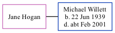

Jane Hogan, the wife of Michael St J Willett (the second cousin on the father's side of Nigel Horne), and married Michael in Brent, London, England around May 19721.
Citations
England & Wales Marriages 1837-2005 - Findmypast
Family Tree

Generated by ged2site. Last updated on Nov 13, 2024